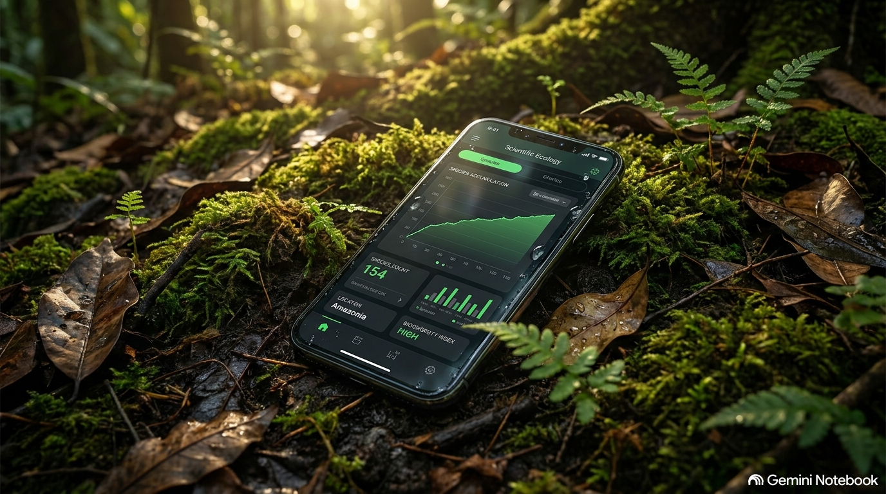
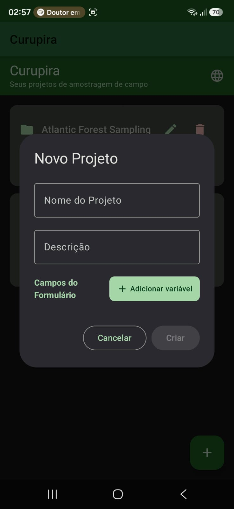
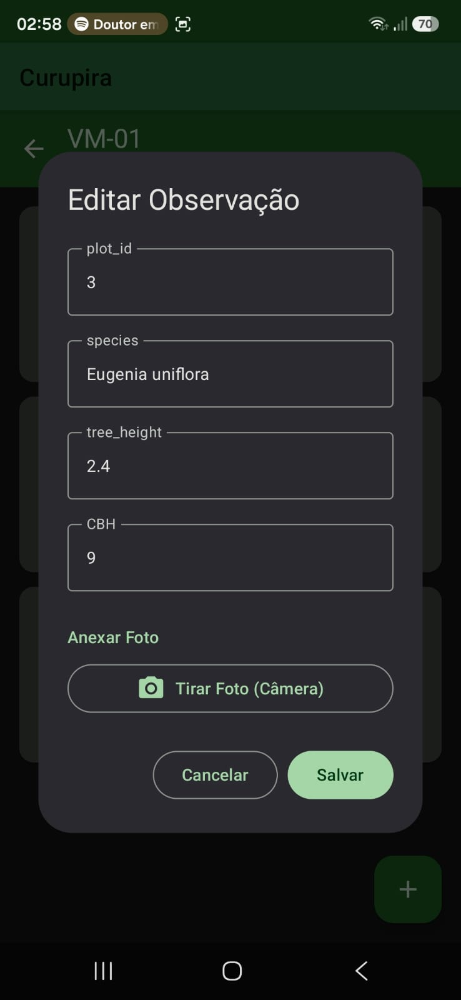
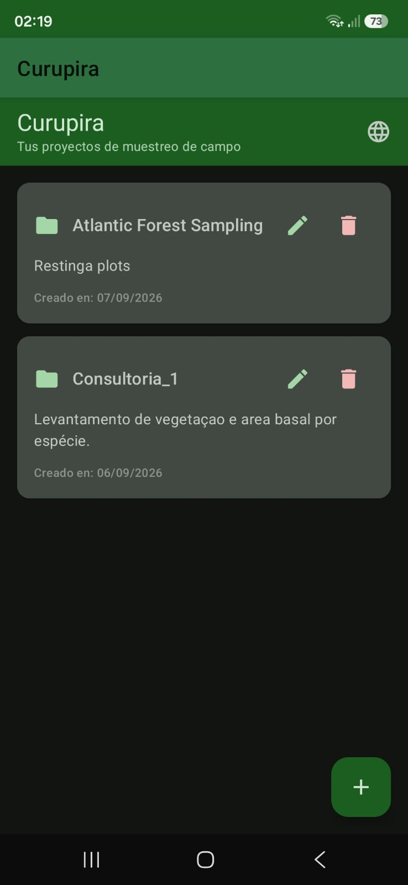
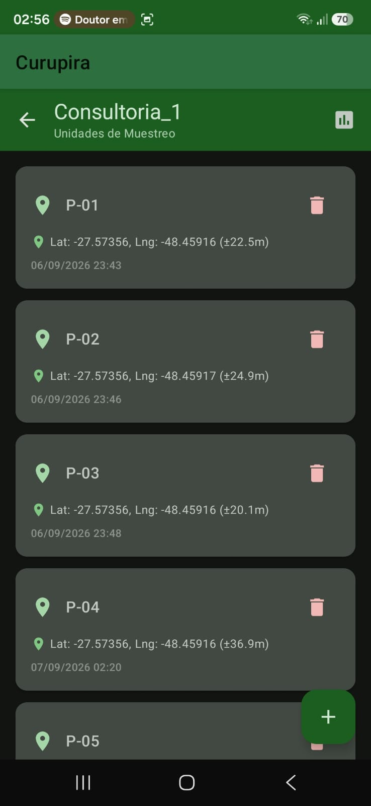
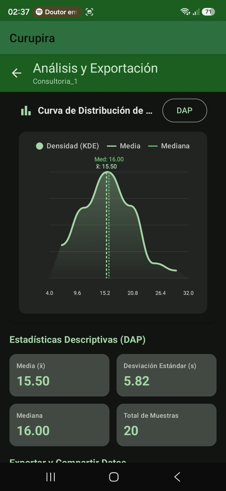
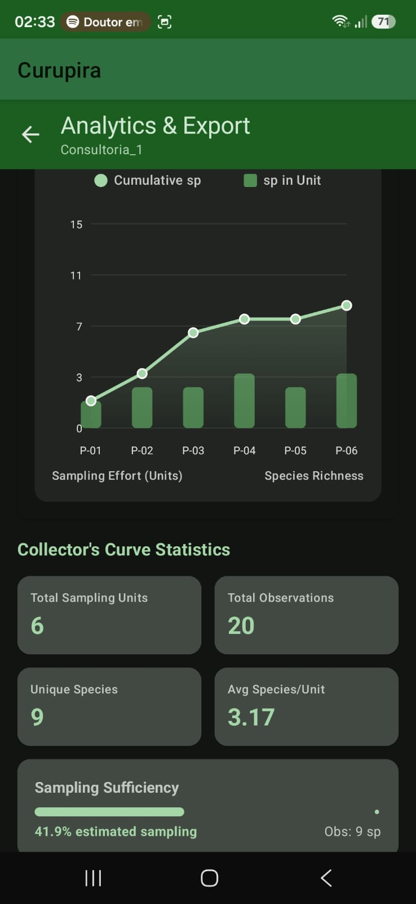

O app Curupira foi criado para ajudar pesquisadores, biólogos, engenheiros florestais e ecólogos a coletarem dados em prol da proteção do meio ambiente e do avanço do conhecimento científico. O aplicativo opera 100% offline e gera conjuntos de dados limpos em .csv, .xlsx, .geojson e pacotes .zip com pasta de fotos organizadas, prontos para análise direta no R, Python, Google Colab, QGIS, Excel e outras ferramentas.

Segundo o folclore brasileiro (conforme registrado na Wikipédia), o Curupira é uma entidade lendária das matas, guardião das florestas e dos animais selvagens. É representado como um pequeno menino de cabelos vermelhos como fogo e pés virados para trás (calcanhares para a frente), cujas pegadas confusas desorientam e despistam caçadores destrutivos e invasores das matas. Inspirado por essa lenda de proteção ambiental, o app Curupira foi criado para ser o guardião dos dados dos pesquisadores em campo, garantindo precisão, simplicidade e segurança total mesmo nos ecossistemas mais isolados.
O Curupira foi projetado para eliminar complicações no campo, permitindo coleta rápida, avaliação da amostra e exportação direta sem intermediários.
Banco de dados SQLite local robusto via Android Room. Zero dependência de conexão com a internet ou servidores em nuvem durante a coleta em campo.
Ao cadastrar variáveis no seu projeto, basta digitar o nome da variável de forma direta! O aplicativo lida com a organização dos dados de forma intuitiva e ágil.
Obtenha coordenadas geográficas de alta precisão instantaneamente usando Priority.PRIORITY_HIGH_ACCURACY via Google Fused Location Services.
Capture fotos de campo diretamente por observação utilizando integração CameraX com compactação automática para otimizar o armazenamento do dispositivo.
Acompanhe a Curva do Coletor para suficiência amostral e a Curva de Distribuição de Densidade com estatísticas de Média, Desvio Padrão e Mediana diretamente no aplicativo.
Gere arquivos de dados limpos em .csv, .xlsx, .geojson e pacotes .zip com pasta de fotos organizada, totalmente prontos para R, Python, Google Colab, QGIS, Excel e mais.
Interface moderna e intuitiva desenvolvida em Jetpack Compose, adaptada para agilidade em campo e suporte nativo a múltiplos idiomas.

Criação simples de projetos com nome, descrição e adição rápida de variáveis.

Coleta direta de dados de espécimes, medições numéricas e fotos via CameraX.

Gerenciamento prático dos projetos com suporte multilíngue nativo (PT, EN, ES).

Organização de parcelas com captura automática de coordenadas geográficas de alta precisão.

Análise estatística gráfica com curva de densidade KDE, Média, Desvio Padrão e Mediana.

Gráfico de acúmulo de espécies para verificação instantânea da suficiência amostral em campo.
Passo a passo completo para configurar projetos, variáveis, unidades amostrais e analisar seus dados.
Ao abrir o Curupira, crie um novo projeto informando nome, descrição e protocolo. Ao cadastrar variáveis, basta digitar o nome da variável de forma direta no formulário.
Organize o trabalho de campo em Parcelas, Transectos ou Pontos. Utilize o botão de captura automática de GPS de alta precisão para registrar latitude, longitude e altitude instantaneamente no local.
Registre indivíduos e ocorrências no campo. Anexe fotografias de alta qualidade capturadas diretamente pela integração CameraX com compactação automática para otimizar o espaço do seu aparelho.
Acompanhe a suficiência amostral através da Curva do Coletor e verifique a Curva de Distribuição de Densidade (com Média, Desvio Padrão e Mediana). Exporte conjuntos de dados limpos em .zip (com CSVs, GeoJSON e fotos) ou .xlsx prontos para R, Python, Google Colab, QGIS e Excel.
Três passos simples para começar a coletar e analisar seus dados de campo com o Curupira.
Baixe o Curupira Field Sampler diretamente na Google Play Store e instale no seu dispositivo Android.
Baixar na Google PlayCrie seu projeto ambiental e adicione variáveis digitando o nome delas. Adicione unidades amostrais com registro automático de GPS.
Acompanhe gráficos da Curva do Coletor e Curva de Densidade diretamente no aplicativo. Exporte o conjunto de dados limpo (.csv, .xlsx, .geojson, .zip) para o R, Python ou Colab.
O Curupira Field Sampler é a solução ideal para pesquisadores, consultores ambientais e estudantes de pós-graduação.
Curupira Field Sampler • 100% Offline Architecture
O Curupira Field Sampler foi construído desde a sua concepção com base no princípio de privacidade absoluta e funcionamento 100% offline ('Offline-First').
Todos os dados inseridos no aplicativo (projetos, unidades amostrais, observações, variáveis e fotografias) são armazenados exclusivamente no banco de dados local do seu dispositivo (Android Room DB) e no armazenamento interno seguro. Nenhum dado é enviado para servidores externos, nuvem ou terceiros.
O acesso ao GPS (FusedLocationProviderClient) é utilizado estritamente para registrar as coordenadas geográficas das unidades amostrais no campo a pedido do usuário. As coordenadas permanecem estritamente no dispositivo e são incluídas apenas nos arquivos exportados (CSV, GeoJSON, ZIP) gerados pelo próprio usuário.
A câmera do dispositivo é acessada via CameraX exclusivamente para capturar fotos de espécimes ou parcelas de campo quando o usuário solicita explicitamente. As imagens são compactadas e armazenadas no diretório de arquivos locais da aplicação.